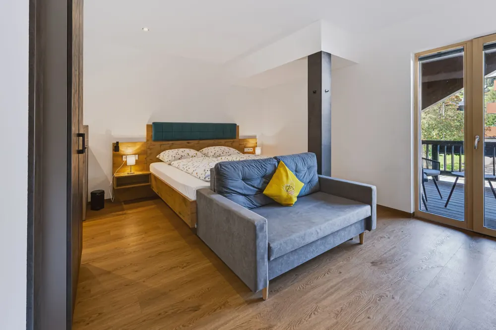
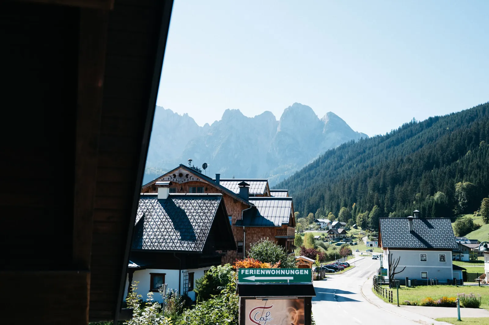
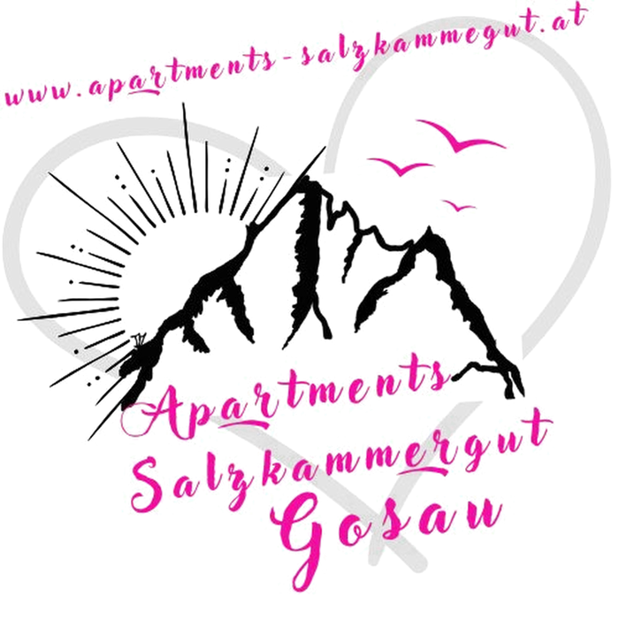
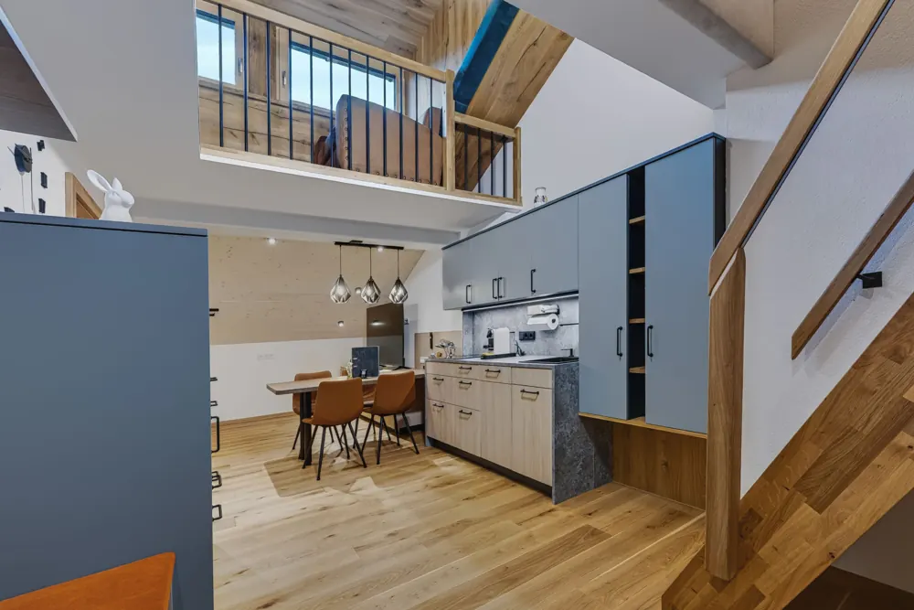
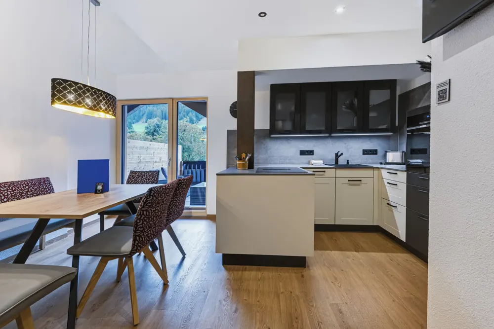
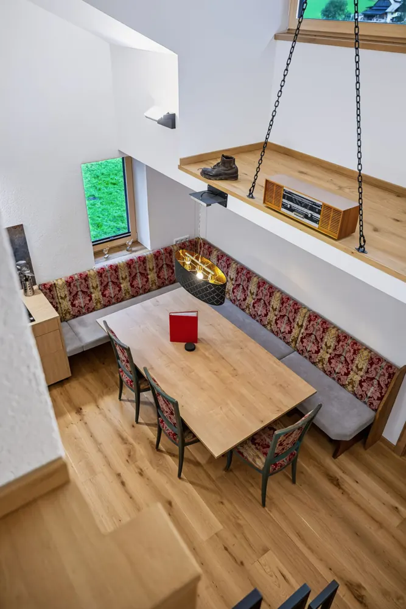
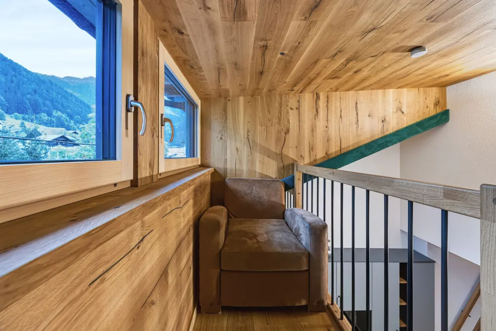
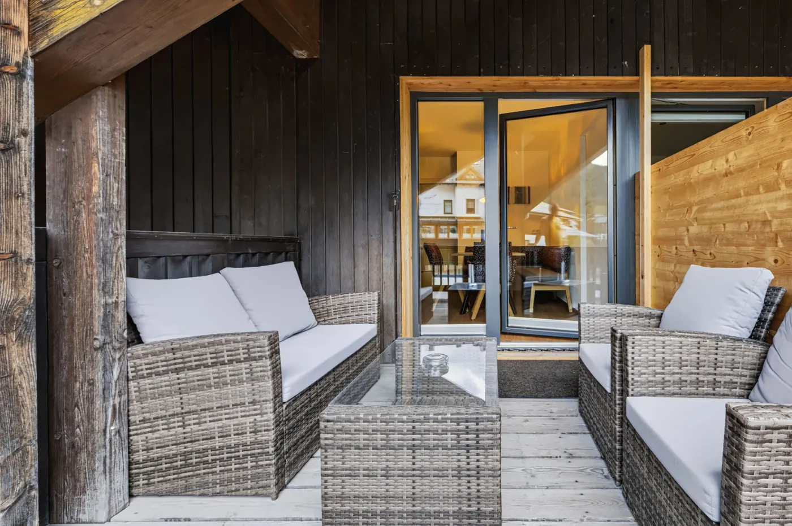

32 m² · balcon avec vue sur les montagnesAppartement GosauseePour les couples · de plain-pied
- 2 personnes
- 1 lit double
- Balcon : vue sur la piste et les montagnes
dès 140 €par nuit pour 2 personnes, ménage final inclus
Voir

Gosau am Dachstein · Salzkammergut, région du patrimoine mondial
Arriver. Se sentir bien. Découvrir.
Quatre nouveaux appartements pour 2 à 8 personnes. Vous entrez avec un code, vous vous garez dans le parking souterrain ou devant la maison, et vous êtes à Hallstatt en 15 minutes.
Nos appartements
De 32 m² pour deux à 105 m² sur deux niveaux pour toute la famille. Linge de lit, serviettes et Wi-Fi toujours inclus.

32 m² · balcon avec vue sur les montagnesdès 140 €par nuit pour 2 personnes, ménage final inclus
Voir
50 m² · 2 niveauxdès 140 €par nuit pour 2 personnes, ménage final inclus
Voir
60 m² · balcon avec vue sur les montagnesdès 140 €par nuit pour 2 personnes, ménage final inclus
Voir
105 m² · 2 niveauxdès 280 €par nuit pour 4 personnes, ménage final inclus
VoirInformations bientôt
Informations bientôt
28.–29.décembre 2026
Les 28 et 29 décembre 2026, les meilleures skieuses du monde s'affrontent en slalom géant et en slalom sur le Hornspitz, à quelques minutes à pied de nos appartements. Pour y assister, réservez dès maintenant.
Vacances dans le Salzkammergut
Les noms ne doivent rien au hasard : depuis Gosau, vous rejoignez les six lacs en une journée, les deux premiers même avec le bus qui s'arrête devant la porte.
Toutes les excursions et randonnées
Temps de trajet en voiture depuis la Gosauseestraße 57, arrondis.

Aménagé par un maître menuisier
Les appartements ont été aménagés par la menuiserie Schmez de Gosau. Du vrai chêne aux plafonds et aux sols, des cuisines haut de gamme et des lits confortables pour un sommeil réparateur.

Vos hôtes
Nous vivons à Gosau et connaissons chaque sentier. Vous arrivez sans contact grâce à un code, mais si vous avez une question ou besoin d'un conseil, nous restons joignables à tout moment.
Tél. +43 664 11 44 926 · info@apartments-salzkammergut.at
L'avis de nos hôtes
« Très bel appartement, bien situé, hôtes très sympathiques. Chaque question a reçu une réponse rapide. »
« Un appartement luxueux et spacieux. Le système de codes aux portes est très simple et le stationnement s'est fait sans problème. »
« Fraîchement rénové, cuisine très bien équipée, lits confortables, d'une propreté impeccable. Un super logement pour visiter Hallstatt. »
Situation & accès
À Gosau, suivez la direction Gosausee et Hintertal. Les appartements se trouvent en face de l'hôtel Sommerhof. L'entrée du parking souterrain est directement à la maison ; des places extérieures sont aussi disponibles devant.
En train jusqu'à Steeg-Gosau, puis bus 541 ou 542 direction Gosausee jusqu'à l'arrêt Gosau Sommerhof, à 20 m de la maison. Horaires sur oebb.at et postbus.at.
La remontée du Hornspitz, dans le domaine Dachstein West, est à quelques minutes à pied, et la piste de ski de fond commence derrière la maison.

Questions fréquentes
Après la réservation, vous remplissez en ligne la fiche d'enregistrement pour tous les voyageurs, comme l'exige la loi autrichienne. Dès qu'elle est complète à 100 %, vous recevez par e-mail votre code pour la porte d'entrée, l'appartement et le local à skis et vélos, au plus tard 48 heures avant l'arrivée. Arrivée dès 15 h 30, départ jusqu'à 10 h. Aucune clé nécessaire.
Vous versez un acompte de 30 % dans les 7 jours suivant la réservation. Comme caution, nous pré-autorisons 300 € sur votre carte de crédit. Rien n'est débité tant que rien n'est endommagé, et le montant est libéré après votre départ.
Les conditions générales autrichiennes de l'hôtellerie (AGBH 2006) s'appliquent. L'annulation est gratuite jusqu'à 3 mois avant l'arrivée. De 3 mois à 1 mois avant, 40 % sont dus ; de 1 mois à 1 semaine avant, 70 % ; durant la dernière semaine et en cas de départ anticipé, 100 % du montant de la réservation.
Chaque appartement dispose de sa propre place dans le parking souterrain, équipé de bornes de recharge pour voitures électriques. Des places en extérieur sont également disponibles.
Malheureusement pas dans les appartements. Avec votre chien, vous êtes le bienvenu à notre ferme Schmiedsipplhof : www.almromantik.at
Le linge de lit, les serviettes, le Wi-Fi, le stationnement et le ménage final. S'y ajoute seulement la taxe de séjour de la commune de Gosau : 4,00 € par personne et par nuit, enfants jusqu'à 15 ans exonérés.
Avec le bus 541 ou 542 depuis l'arrêt Gosau Sommerhof devant la maison, avec correspondance vers Hallstatt. Horaires actuels sur oebb.at.
Réservez en direct · Questions : +43 664 11 44 926 · info@apartments-salzkammergut.at